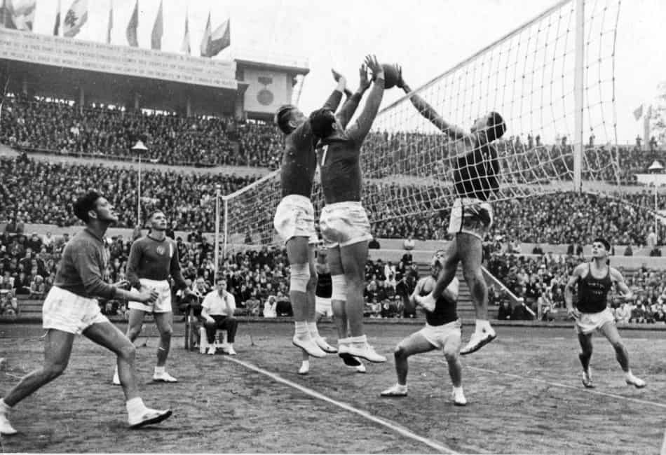

Volleyball is a team sport in which two teams of six players are separated by a net. Each team tries to score points by grounding a ball on the other team’s court under organized rules. It has been a part of the official program of the Summer Olympic Games since Tokyo 1964. Beach volleyball was introduced to the program at the Atlanta 1996 Summer Olympics. The adapted version of volleyball at the Summer Paralympic Games is sitting volleyball.
Volleyball was invented in 1895 by William G. Morgan in Holyoke, Massachusetts, as a less strenuous alternative to basketball, initially called "Mintonette" before being renamed volleyball in 1896 after a spectator noted its volleying nature. The sport spread globally through YMCA organizations, leading to the development of new techniques like the set and spike in the Philippines and the creation of beach volleyball in California in 1930. Volleyball became an Olympic sport in 1964, with beach volleyball added in 1996, solidifying its status as a popular international sport with millions of players worldwide.
The game of volleyball is evolving, and it is not just about the techniques or the rules. The demands on players are growing too. Faster-paced matches, more competitive tournaments, and a focus on performance have made it essential to have not just talent but also the right tools and training. The future of volleyball is all about solutions that make the game better—for everyone.
Seen in the picture are prominent Filipina players; Angel Canino and Michaela Belen. They are said to be the future of Philippine volleyball and are predicted to restore honor to the reputation of Philippine volleyball.